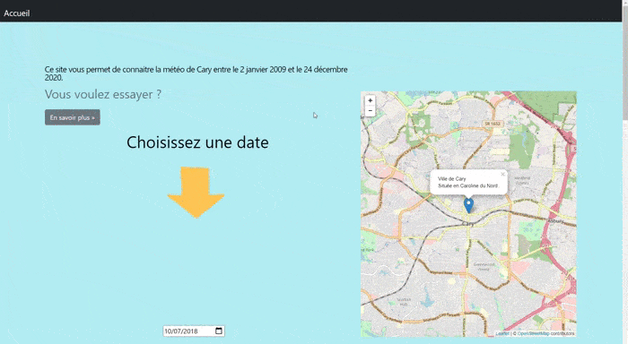
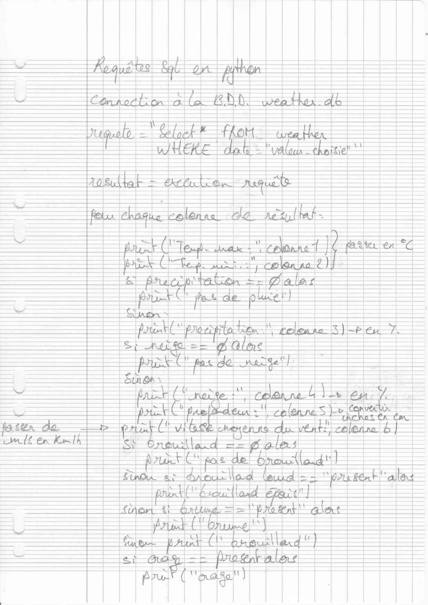
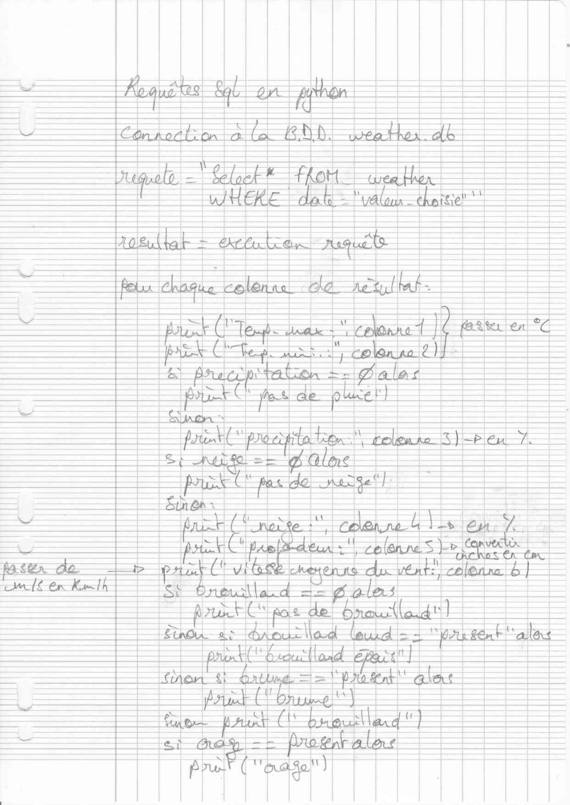

Site web - Météo de Cary
Cette année, par groupe de deux en NSI, j'ai du participer à la réalisation d'un site web. Le projet s’est déroulé sur 4 semaines avec pour objectif final un oral qui visait à présenter notre production. En voici le détaillé :
- Directives
-
La page web devait impérativement comprendre les éléments suivants :
- - Une base de données (BDD)
- - Des requêtes SQL
- - Du JavaScript
- - Du PHP ou Python côté serveur
- - Un modèle Bootstrap
- - Un affichage en JavaScript de la BDD
g- Analyse

 

Nous avons trouvé notre base de données sur data.gov qui recense la météo de la ville américaine de Cary depuis 2009, jour par jour. En conséquence, nous avons du convertir les unités de mesures, différentes de celles utilisées en France. Pour faire afficher la météo en fonction d'une date choisie, j'avais trouvé un script en JS puis j'ai finalement opté pour un input de type date, qui est un outil bien plus simple à mettre en place. Par une requête SQL, renseignée grâce à la bibliothèque sqlite3, nous récupérons les données de la date sélectionnée et les affichons sous la forme de textes et d'un graphique réalisé avec le module chart.js. Pour le bootstrap, nous avons rapidement trouvé un modèle nous plaisant que nous avons par la suite modifié selon nos envies. Quant à la carte, pour présenter la ville de Cary, nous avons utilisé le module leaflet.js. Enfin, afin d'avoir une idée de notre site, j'ai dessiné sur feuille le rendu final. Et pour finalement lancer la page web depuis un navigateur, nous avons opté pour l'utilisation de python et de la bibliothèque flask.